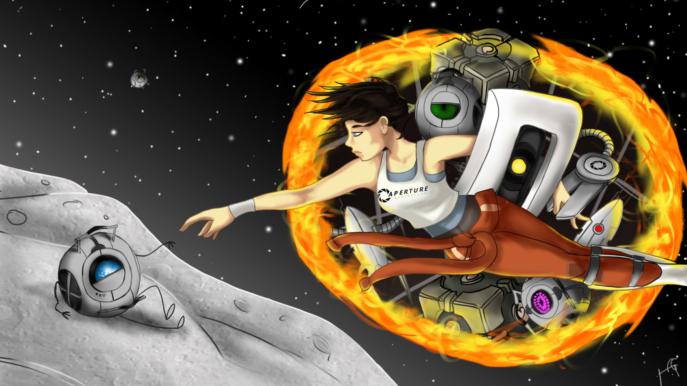
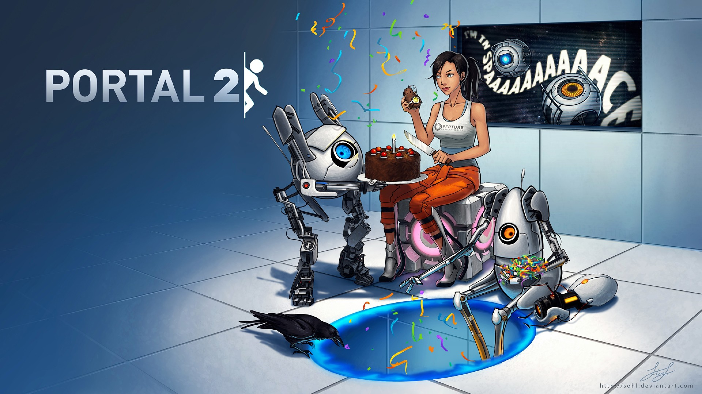
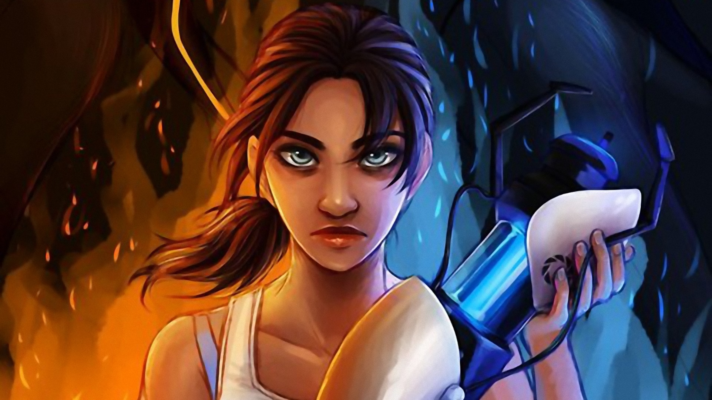

Portal 2 este un joc de tip puzzle-platformer creat de către Valve. A fost lansat în 2011 luna aprilie pentru Windows, Mac OS X, Linux, PlayStation 3, și Xbox 360. Versiunea digitala pentru calculator a fost distribuită online pe platforma Steam deținută de Valve, iar toate versiunile fizice erau distribuite de Electronic Arts.La fel ca în originalul Portal, jucătorii rezolvează puzzle-uri punând portaluri și teleportându-se între ele. Portal 2 adaugă noi mecanici precum grinzi tractoare, lasere, poduri de lumină, și vopsele care alterează mișcările jucătorului sau îi permite să pună portaluri pe orice suprafață. În campania single-player, jucătorii o controlează pe Chell, care navighează prin Aperture Science Enrichment Center în timpul reconstrucției acesteia de către supercomputer-ul GLaDOS; introduc personaje noi precum robotul Wheatley și fondatorul Aperture Cave Johnson. În modul co-op, jucătorii rezolvă puzzle-uri împreună controlând roboții Atlas și P-Body. Jonathan Coulton și The National au produs melodii pentru acest joc.
Valve a anunțat Portal 2 în martie 2010, și l-au promovat folosind ARG și Potato Sack, precum și o colaborare cu mai mulți creatori de jocuri. După lansare, Valve a scos mai mult content instalabil și un map editor simplu care le permite jucătorilor să creeze și să distribuie hărți.Portal 2 a fost lăudat pentru gameplay, un mod balansat de-a învăța jocul, ritm, umor negru, poveste și actorie. La fel ca predecesorul său, a fost descris ca fiind unul dintre cele mai bune jocuri din toate timpurile.
Gameplay: Portal 2 este un joc puzzle cu o perspectivă first-person. Jucătorul ia rolul de Chell în campania single-player, sau unul dintre cei doi roboți-Atlas și P-Body-în campania co-op, sau ca un chip umanoid în hărțile create de comunitate. Aceste trei caractere pot explora și interacționa cu mediul înconjurător. Caracterele pot rezista la daune limitate și vor muri dacă aceste daune sunt consistente. Nu există penalizare dacă cazi pe suprafațe solide, dar dacă cazi în gropi fără sfârșit sau bazine toxice caracterul va muri imediat. Atunci când Chell moare în campania single-player, jocul se restartează de la un checkpoint recent; în campania co-op, robotul se respawnează imediat fără a restarta puzzle-ul. Scopul ambelor campanii este să exploreze Aperture Science Laboratory- un labirint mecanizat, maleabil și complicat. Cât timp majoritatea jocului are loc în camere de testare cu vedere clară către intrare și ieșire, alte părți se află în spatele scenelor unde obiectivele nu sunt la fel de clare.
Tutorialul inițial îi arată jucătorului controalele generale și îi ilustrează cum poate interacționa cu mediul înconjurător. Jucătorul trebuie să rezolve puzzle-uri folosindu-se de „portal gun” sau „Aperture Science Handheld Portal Device”, care poate crea două portaluri ce conectează două suprafețe albe mat, continue și plate. Caracterele pot folosi aceste portale pentru a traversa între încăperi sau pentru a arunca obiecte sau pe ei înșiși pe anumite distanțe. Conturul unui portal este vizibil prin pereți și alte obstacole pentru a face localizarea mai ușoară.Elementele jocului includ lasere, grinzi tractoare, și poduri de lumină, toate dintre acestea pot fi transmise printr-un portal. Aerial Faith Plates aruncă jucătorul sau obiectele în aer sau în portale. Jucătorul trebuie să dezactiveze turetele sau să se ferească de raza lor de acțiune. Cuburile cu greutate au fost refăcute, și există mai multe tipuri: Redirection Cubes, care au lentile prismatice și pot redirecționa laserul, spherical Edgeless Safety Cubes, o verisiune mai antică a cuburilor cu greutate, și un hibrid dintre cub și turetă creat de către Wheatley după ce a preluat controlul Aperture.
Vopselele oferă diferite proprietăți suprafețelor sau obiectelor acoperit cu ele. Jucătorii pot folosi vopseaua portocalie pentru a traversa suprafețe mai rapid, cea albastră pentru a ricoșa, și vopseaua albă care permite punerea unui portal pe anumiți pereți. Doar un singur tip de vopsea poate afecta o suprafață. Unele suprafețe, precum grilajele, nu pot fi acoperite cu vopsea. Apa poate bloca sau spăla vopseaua, readucând suprafața sau obiectul la forma sa normală.
Jocul include o campanie co-op. Doi jucători pot folosi aceeași consolă pentru a juca split-screen, sau pot folosi calculatoare sau console separate; Windows, Mac OS X, și PlayStation 3 jucătorii se pot juca unii cu alții indiferent de platformă. Jucătorii pot controla roboți ce folosesc portal gun-uri diferite și pot folosi portalele celeilalte persoane. Portalele fiecărei persoane au o culoare diferită, unul este albastru și mov, iar celălalt portocaliu și roșu. O cameră de calibrare îi separă pe cei doi jucători pentru a-i învăța pe aceștia cum să folosească sistemul de comunicare și portalele. Camerele ce apar mai târziu nu sunt la fel de structurate și îi forțează pe jucători să își folosească ambele seturi de portale pentru redirecționarea laserelor, podurilor de lumină sau alte manevre. Jocul oferă un sistem de comunicare cu ajutorul vocii, iar jucătorii online pot intra într-un mod split-screen pentru a ajuta cealaltă persoană să se coordoneze. Jucătorii pot folosi „ping-uri” pentru a atrage atenția celuilalt la diferite obiecte sau ziduri, să înceapă numărători inverse pentru sincronizare, și să folosească gesturi precum a face din mână sau a îmbrățișa. Jocul urmărește camerele pe care fiecare jucător le-a completat și îi permite să le rejoace cun un partener nou.
Erik Wolpaw, scriitorul principal a poveștii Portal 2, a estimat că fiecare campanie are o durată de aproape sașe ore. Portal 2 conține și comentarii făcute de către creatorii jocului. Comentariile sunt accesibile după ce jocul este completat cel puțin o data, acestea apar împrăștiate prin camere. Conform Valve, fiecare campanie single-player și multiplayer este de doua ori mai lungă decat campania din Portal, adică jocul este de aproape de cinci ori mai lung.
Poveste: Seria Portal împarte același univers fictiv ca Half-Life series. Evenimentele din Portal au loc între primul și al doilea joc Half-Life, între timp ce majoritatea poveștii Portal 2 are loc după mult timp după evenimentele din Portal și Half-Life 2. Înainte de Portal, Aperture Science făcea experimente pentru a determina ce om ar putea să navigheze în siguranță prin camerele de testare, până când inteligența artificială GLaDOS, guvernând laboratorul, își omoară toți angajații. La sfârșitul primului joc, protagonistul, Chell o distruge pe GLaDOS și pentru moment scapă din acea instituție, dar este trasă înapoi înăuntru de o figură nevăzută care a fost identificată mai tarziu de către scriitorul Erik Wolpaw ca fiind „Party Escort Bot”. O bandă desenată îl arată pe angajatul Doug Rattmann al instituției Aperture Science folosind graffity pentru a ghida jucătorul din Portal, punând-o pe Chell într-o stare de comă pentru a-i salva viața, până la începutul jocului Portal 2.
 Povestea single-player
În instituția Aperture Science, Chell se trezește într-o cameră de recuperare care seamănă cu una de motel. Instituția este într-o stare de distrugere și este pe punctul de a se dărâma. Wheatley o ghidează prin vechile camere de testare într-o încercare de a scăpa. O reactivează din greșeala pe GLaDOS, care o separă pe Chell de Wheatley și începe să reconstruiască laboratorul.
GLaDOS o supune pe Chell unor noi teste până când Wheatley o ajută să scape iarăși. Ei sabotează plantația de reconstruție a instituției, apoi o confruntă pe GLaDOS și schimbă conștiința sa cu cea a lui Wheatley, acesta devenind liderul laboratorului. Wheatley, înnebunit de putere, îi atașează personalitatea lui GLaDOS unei baterii bazate pe cartofi. GLaDOS îi spune lui Chell că Wheatley a fost creat ca un nucleu de încetinire a inteligenței care produce gânduri ilogice, creat pentru a îi încetini ei propria personalitate. Furios, Wheatley le aruncă pe Chell și GLaDOS printr-un lift până la cel mai jos nivel al instituției.
Chell recuperează bateria bazată pe cartofi și se aliază pentru a îl opri pe Wheatley înainte ca incompetența sa să distrugă instituția. Urcând prin laboratoarele construite în anii 60, 70 și 80 descoperă înregistrări audio făcute de Cave Johnson, fondatorul instituției Aperture Science. Înregistrările arată cum Aperture a început încet să piardă bani și prestigiu, și că Johnson a fost otrăvit cu praf de lună folosit pentru a crea suprafețe pe care pot fi puse portale. Ultima lui dorință a fost ca conștiința asistentului său, Caroline, să fie transferată într-un calculator făcut pentru a stoca conștiința unui om, pe care îl pregătise pentru el, creând-o pe GLaDOS. GLaDOS este tulburată de această descoperire.
Chell și GLaDOS se întorc la etajul cel mai înalt și navighează prin camerele distorsionate ale lui Wheatley, unde descoperă că instituția este pe punctul de a se dărâma. Chell îi atașează trei nuclee de personalitate corupte lui Wheatley pentru a forța altă schimbare de nucleu și a o readuce pe GLaDOS la conducere. În orice caz, Wheatley distruge butonul necesar pentru a iniția transferul, și instituția este aproape de auto-distrugere. Când acoperișul se dărâmă, Chell pune un portal pe lună. Ea și Wheatley sunt trași în spațiu în timp ce GLaDOS îsi recapătă controlul. GLaDOS o readuce pe Chell și îl abandonează pe Wheatley. Când Chell se trezește, GLaDOS spune că a învățat despre umanitate de la rămășitele lui Caroline, dar șterge personalitatea lui Caroline. Considerând că Chell nu merită sa fie ucisă, GLaDOS o eliberează.
Poveste co-op
Povestea co-op are loc după cea single-player, dar jucătorii nu sunt nevoiți să le joace în ordine. Personajele ATLAS și P-Body sunt doi roboți bipezi care navighează prin camerele de testare împreună, fiecare având câte un portal gun complet funcțional. După ce termină o cameră de testare, roboții sunt dezasamblați și reasamblați la următoarea cameră. După ce completează un set aceștia sunt duși la un hub. Puzzle-urile din fiecare set de teste se concentrează asupra unui singur element sau unei tehnici de rezolvare a unui puzzle. În primele patru seturi, GLaDOS pregătește roboții să se aventureze în afara sistemului de testare pentru a recupera dischete. Aceasta îi distruge și le pune memoria în noi corpuri. La început, GLaDOS este încântată în legătură cu noii ei subiecți, dar devine desatisfăcută deoarece aceștia nu pot muri cu adevărat, și devine inconfortabilă cu parteneriatul acestora. La sfârșitul acestei povești aceștia intră în Vault unde sunt ținuți oamenii într-o stare de comă. GLaDOS le mulțumește pentru că au localizat oamenii, pe care îi vede ca pe noi ei subiecți de testare, iar jocul se sfârșește.